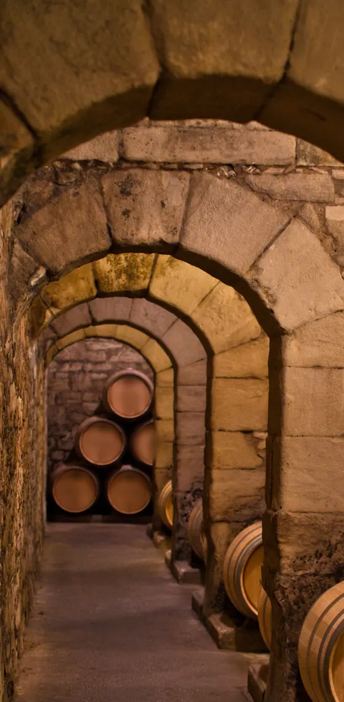
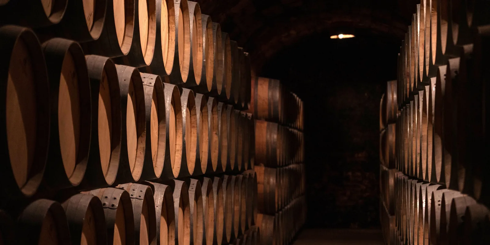
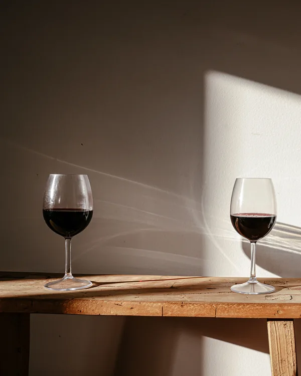

Vinárstvo Svorník

Rodinné vinárstvo vo Svätom Jure. Štyri hektáre viniča na žulovom svahu pod lesom, svieže biele vína, Frankovka z dubových sudov a degustácie v klenutej pivnici z roku 1786.
- Vinica
- 4 ha v trati Strminy
- Vinotéka
- štvrtok až sobota
Najlepšie z pivnice
Frankovka modrá Klenba
2022, výber z hrozna, 14 mesiacov v dube
Víno zo žulového svahu


Hmla nad terasami viniča. V kruhu tmavé strapce pri oberačke.
Nad Svätým Jurom stúpajú vinice až k lesu. Najvyššej z nich sa odjakživa hovorí Strminy: pod tenkou vrstvou hliny je žula, korene idú hlboko a víno má z toho napätie a slanú stopu.
Vinárstvo vedú súrodenci Tomáš a Zuzana, tretia generácia rodiny. Strapce zbierame ručne do malých debničiek, biele vína kvasia pomaly v chlade a Frankovka zreje v dubových sudoch v pivnici pod domom.
Do pivnice sa vchádza kamenným portálom. Na jeho vrchole je svorník, kameň, ktorý drží celý oblúk, a v ňom vytesaný rok 1786. Podľa neho sa voláme.
- Vinica
- 4 ha v trati Strminy, 210 až 260 m n. m.
- Odrody
- Veltlínske zelené, Rizling rýnsky, Devín, Frankovka modrá
- Zber
- ručne, od septembra do konca októbra
- Pivnica
- klenutá, z roku 1786, celý rok 12 °C
- Ročne
- asi 18 000 fliaš
Naše vína
Šesť vín z jedného svahu. Pošleme ich kuriérom po celom Slovensku alebo si ich vyzdvihnete v pivnici.
Ukážka dizajnu e-shopu: košík funguje, ale nič sa neobjedná ani nezaplatí. E-shop na Shoptete bude mať vzhľad šablóny Shoptetu, nie tejto ukážky.
-
Veltlínske zelené
2025, suché, 12 % obj., 0,75 l
Zelené jablko, biele korenie a svieža kyselina.
- Telo
- 2 z 5
- Kyselina
- 4 z 5
- Sladkosť
- 1 z 5
Hodí sa k pstruhovi na masle, šalátu s kozím syrom aj k rezňu.
10,90 €za fľašu
-
Devín
2025, polosuché, 12,5 % obj., 0,75 l
Ruža, med a zrelá hruška, jemne sladký koniec.
- Telo
- 3 z 5
- Kyselina
- 3 z 5
- Sladkosť
- 3 z 5
Hodí sa k pikantnej ázijskej kuchyni, plesňovým syrom a ovocným koláčom.
12,40 €za fľašu
-
Rizling rýnsky
2024, suché, 12,5 % obj., 0,75 l
Broskyňa, lipový kvet a slaný koniec zo žuly.
- Telo
- 3 z 5
- Kyselina
- 4 z 5
- Sladkosť
- 1 z 5
Hodí sa k pečenému kuraťu s bylinkami, rybe na grile a sushi.
13,50 €za fľašu
-
Rosé z Frankovky modrej
2025, suché, 11,5 % obj., 0,75 l
Jahoda, malina a šťavnatá kyselina.
- Telo
- 2 z 5
- Kyselina
- 4 z 5
- Sladkosť
- 1 z 5
Hodí sa k letným šalátom, grilovanej zelenine a lososovi.
9,50 €za fľašu
-
Frankovka modrá
2023, suché, 13 % obj., 0,75 l
Višňa, čierne korenie a jemné triesloviny.
- Telo
- 3 z 5
- Kyselina
- 3 z 5
- Sladkosť
- 1 z 5
Hodí sa k pečenej kačke s červenou kapustou a hovädziemu gulášu.
11,90 €za fľašu
-
Frankovka modrá Klenba
2022, výber z hrozna, suché, 13,5 % obj., 14 mesiacov v dubovom sude
Slivka, horká čokoláda a vanilka z dubu.
- Telo
- 5 z 5
- Kyselina
- 3 z 5
- Sladkosť
- 1 z 5
Hodí sa k diviakovi, hovädzím líčkam a zrelým syrom.
18,90 €za fľašu
Ceny sú s DPH za fľašu 0,75 l. Víno predávame len osobám starším ako 18 rokov. Kuriér po Slovensku stojí 5,90 €, osobný odber v pivnici je zadarmo.


Degustácie v pivnici
Pivnica pod domom je klenutá a celý rok má 12 °C. Nalejeme vám zo sudov aj z fliaš a povieme, prečo každé víno chutí tak, ako chutí.
- Ochutnávka v pivnici
- 6 vín, prehliadka pivnice, asi hodina
- 25 €za osobu
- Pivničná degustácia
- 8 vín, prehliadka a domáca doska so syrom, šunkou a chlebom, asi 2 hodiny
- 35 €za osobu
- Skupiny nad 12 osôb a firmy
- Termín a ponuku pošleme e-mailom do dvoch dní.
- na mieru
Piatok o 17:00, sobota o 14:00 a o 17:00. V januári len pre skupiny na objednávku, od 24. do 26. decembra zatvorené.
Platíte na mieste kartou alebo v hotovosti.
Šoférom a deťom nalejeme hroznový mušt z našej vinice.
Vinársky rok
Kedy sa vinič strihá, kedy kvitne a kedy sa zbiera. A kedy je pivnica otvorená aj bez rezervácie.
- Oberačka
- Otvorené pivnice
- Degustácie v piatok a v sobotu
Január
Pivnica odpočíva
Vo vinici začína zimný rez. Frankovka zreje v sudoch, degustácie robíme len pre skupiny na objednávku.
- Len na objednávku
Február
Zimný rez
Každý ker strihá ruka zvlášť, podľa toho, koľko hrozna má o rok uniesť. Degustácie sú znova v piatok a v sobotu.
- Degustácie
Marec
Vinič plače
Keď sa oteplí, z čerstvých rezov kvapká miazga. V pivnici plníme do fliaš prvé biele vína z minulej jesene.
- Degustácie
Apríl
Pučanie
Z očiek sa tlačia prvé lístky. Na dvore otvárame letnú vinotéku a v sobotu nalievame aj vonku.
- Degustácie
Máj
Otvorené pivnice
Víkend, keď je naša pivnica otvorená bez rezervácie. Mladé vína z minulej jesene ochutnáte priamo zo sudov.
- Otvorené pivnice
- Degustácie
Jún
Kvitnutie
Vinič kvitne a celý svah vonia ako lipa. Vylamujeme a viažeme letorasty, aby mal každý strapec miesto.
- Degustácie
Júl
Zelené práce
Odlisťujeme okolo strapcov, aby mali vzduch a ranné slnko. Piatkové degustácie sú pod orechom na dvore.
- Degustácie
August
Mäknutie bobúľ
Bobule mäknú a Frankovka sa farbí do modra. Čistíme lis a pripravujeme sudy na oberačku.
- Degustácie
September
Prvé strapce
Ručne zbierame skoré odrody, ako je Devín. V pivnici kvasí burčiak a ochutnáte ho aj u nás.
- Oberačka
- Burčiak
- Degustácie
Október
Oberačka
Oberáme Rizling rýnsky a Frankovku modrú. Zber trvá podľa počasia dva až tri týždne, strapce idú z vinice rovno do lisu.
- Oberačka
- Degustácie
November
Mladé víno
Okolo svätého Martina ochutnáte prvé mladé víno. V druhej polovici novembra je pivnica celý víkend otvorená bez rezervácie.
- Otvorené pivnice
- Mladé víno
- Degustácie
December
Víno pod stromček
Kartóny šiestich fliaš na darček. Objednáte ich v e-shope a v pivnici si ich vyzdvihnete až do 23. decembra, od 24. do 26. decembra je zatvorené.
- E-shop
- Degustácie
Kde nás nájdete
Pivnica je v dvore, vchod bránou z Lisovej ulice. Z Bratislavy prídete autom alebo vlakom na zastávku Svätý Jur, parkovať môžete pred domom.
| Pondelokdnes | zatvorené |
|---|---|
| Utorokdnes | zatvorené |
| Stredadnes | zatvorené |
| Štvrtokdnes | 14:00 až 19:00 |
| Piatokdnes | 14:00 až 19:00 |
| Sobotadnes | 10:00 až 18:00 |
| Nedeľadnes | zatvorené |
V januári a od 24. do 26. decembra je vinotéka zatvorená, víno vám pošleme kuriérom.